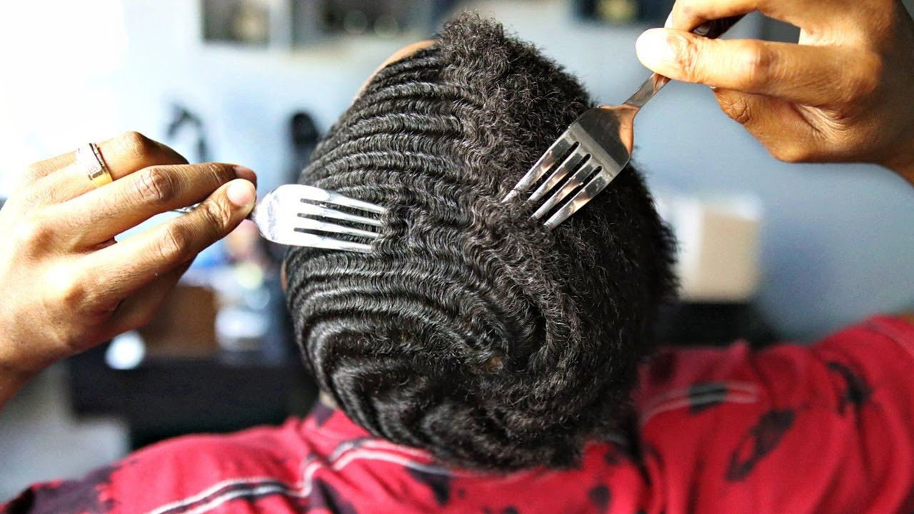

Fixing Forks in Your Waves: Why They Form and How to Brush Them Out
A fork — where a wave splits into two directions like a river delta — is the most common pattern flaw in the game, and the most misdiagnosed. Wavers blame their hair, their products, their barber; the actual cause is almost always mechanical: strokes that start off-centre or drift across the grain, repeated until the hair memorised the error. 360Jeezy (@360Jeezy) dedicated a full tutorial to eliminating forks, shown below. This guide explains the formation, the diagnosis, and the correction routine — including its honest timeline.
How forks form
Your crown is a swirl. Hair leaves the centre in a spiral, and your brushing is supposed to redirect it into clean radiating lines. Wherever strokes habitually start away from the true centre, or push hair across its neighbours instead of along them, two directions get trained into the same patch — and the patch splits the difference by splitting. That is a fork: two trained directions sharing one territory.
Forks concentrate at the crown and at the corners where sections meet (top-to-side, side-to-back), because those are the places strokes transition and get sloppy. A new fork can form in two careless weeks — usually during a wolf, when length hides the surface and sessions get lazy.
The correction routine
Correction is retraining, and it runs on precision, not force. Identify the fork's location and the direction the hair should be travelling there (from your true crown centre, outward). Then, in every session, give that patch dedicated work: short, exact strokes in the correct direction only, starting precisely at the centre, with mirror verification. A smaller brush or the brush's edge gives the control the patch needs.
The comb can help expose the fork's true shape before you brush — comb the area gently in the correct direction and watch which hairs refuse; those refusers are the retrained minority you are working on. Follow every correction session with firm compression. You are outvoting the wrong direction with the right one, session by session.
The honest timeline
A shallow fork on short hair can correct in two to three weeks of daily focused work. A deep fork trained over months — especially one at the crown — can take a full growth cycle or more, and some wavers ultimately fix a stubborn crown fork with a fresh cut and a corrected start, which is not defeat; it is engineering.
What does not work: brushing harder in random directions, piling on product, or ignoring it and hoping the next cut resets it (the cut shortens the hair; the trained direction at the root survives). Forks are fixable, always — the currency is precision and patience, paid daily. 360Jeezy's method in the video is the proof of work.
Watch: HOW TO GET RID OF FORKS IN YOUR 360WAVES
Video: “HOW TO GET RID OF FORKS IN YOUR 360WAVES” by 360Jeezy (@360Jeezy) · Watch on YouTube
Shop the gear
Everything in this guide runs on the right gear: a durag that holds compression without slipping, a cap that stays put, and fabric that treats your hair right. The durag.store launch lineup is built to that standard — dual-layer construction, long tails, and stitching made to survive the routine. Join the launch list and use code GOLDSTANDARD for 15% off your first order.
Keep learning
- Uneven Waves and Weak Sides: The Rebalancing Program — Intermediate · Troubleshooting
- Forehead Lines From Your Durag: Causes and Complete Fixes — Basic · Troubleshooting
- Dry Scalp and Flaking Under Waves: The Waver's Fix Guide — Intermediate · Troubleshooting
Sources: Video — “HOW TO GET RID OF FORKS IN YOUR 360WAVES” by 360Jeezy (@360Jeezy), youtube.com. Guide written by the durag.store Wave Lab.